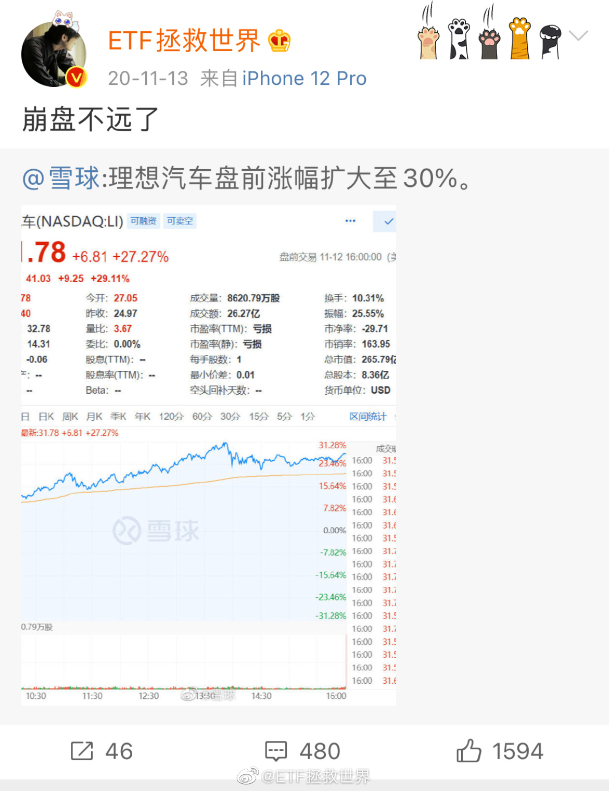
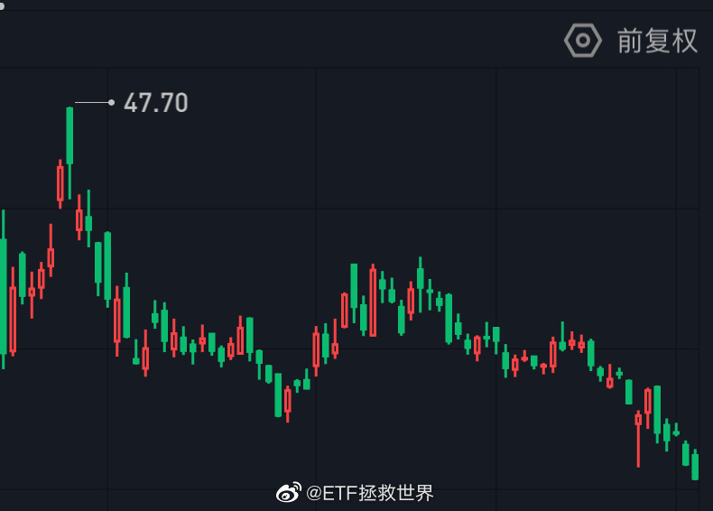

我再说一条，你们观察。很多高位买入被套的，会安慰自己是价值投资，早晚会回来。或者表示定投摊低成本，越跌越买。这个时候他们表现出的是非常难得的长期投资精神。如果很快涨回来还好，如果涨不回来，他们中的87%会在持续低迷的时候痛下决心亏损卖出，并宣布永远不再相信价值投资和长期投资。剩下的13%会在回本的一瞬间卖出。
看着下跌4%的创业板，想起之前创业板高位的时候有人在私信里指责我：为什么你的创业板50%就卖了？为什么你不继续持有？你这水平还敢公开操作？怎么说呢，这个世界有些人就是疯狂到，你不跟着他疯他都不答应，都会嘲笑你这种程度了。
一个热门品种涨了很多很多，就会有无数声音出来陈述理由，并告诉你这个品种会永远好下去——即使贵了点，长期看也是最值的。你可以为它的上涨喝彩和鼓掌，但你要真的信了这些各怀心思的声音，那么最终你会发现，小丑竟然是你自己。
回复@disciples倾城:我从去年7月就开始跪求新朋友不要跟车，一部分原因就是担心这种局面出现。为什么我总说不喜欢新朋友，是因为我预见到了牛市进来的很大一部分新人会这样//@disciples倾城:益达，你比他好多了 评论配图@ETF拯救世界:这篇微博发出当天，该股最高冲到40块。今天是22块，下跌45%。但这个不是重点。重点是其实之后冲到过47，更重点的是有朋友私信我说看了我的微博做空它，然后赔钱了。当然他没有埋怨我。是不是非常有意思。时间证明你是对的，真的跌了45%。但你做空却赔钱了。做空真的很难，你需要预测崩盘，还需要预测崩盘的时间。过程中还要保证不再上涨。简直难比登天。反正我不做空。另外，以后说判断要更加谨慎。50万人看可能就有50万种解读和应对，相当可怕。
这篇微博发出当天，该股最高冲到40块。今天是22块，下跌45%。但这个不是重点。重点是其实之后冲到过47，更重点的是有朋友私信我说看了我的微博做空它，然后赔钱了。当然他没有埋怨我。是不是非常有意思。时间证明你是对的，真的跌了45%。但你做空却赔钱了。做空真的很难，你需要预测崩盘，还需要预测崩盘的时间。过程中还要保证不再上涨。简直难比登天。反正我不做空。另外，以后说判断要更加谨慎。50万人看可能就有50万种解读和应对，相当可怕。